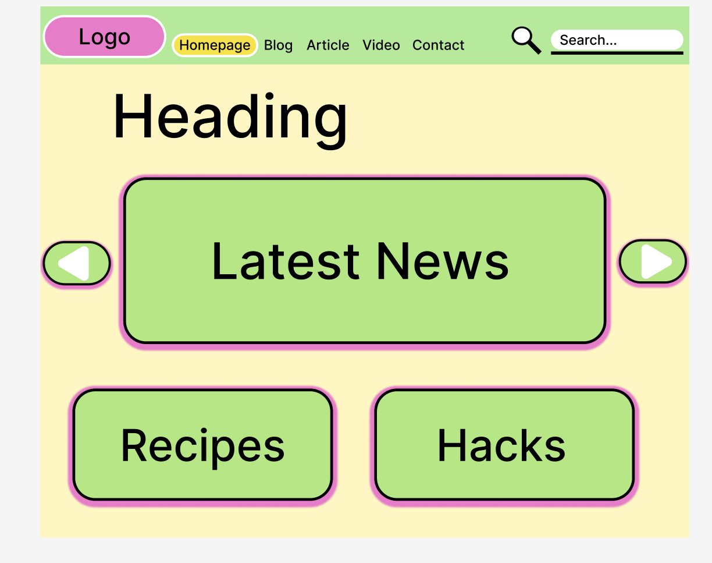
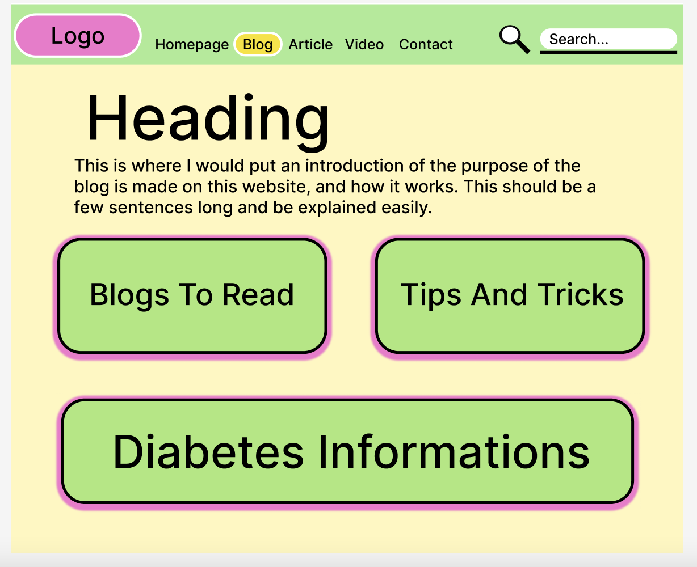
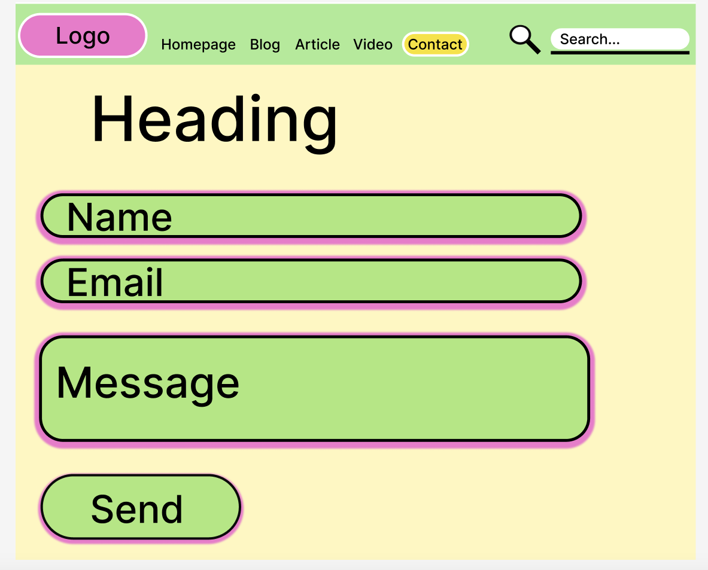
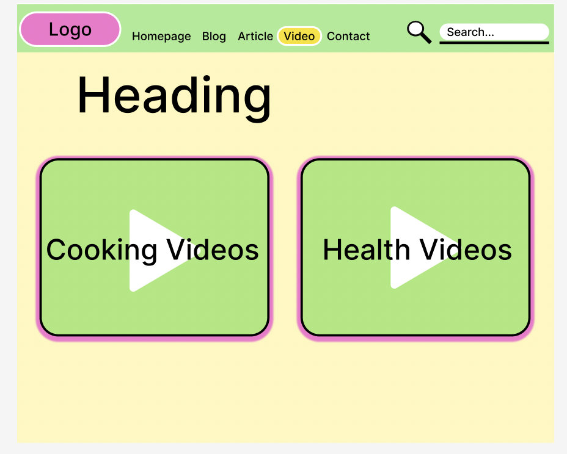
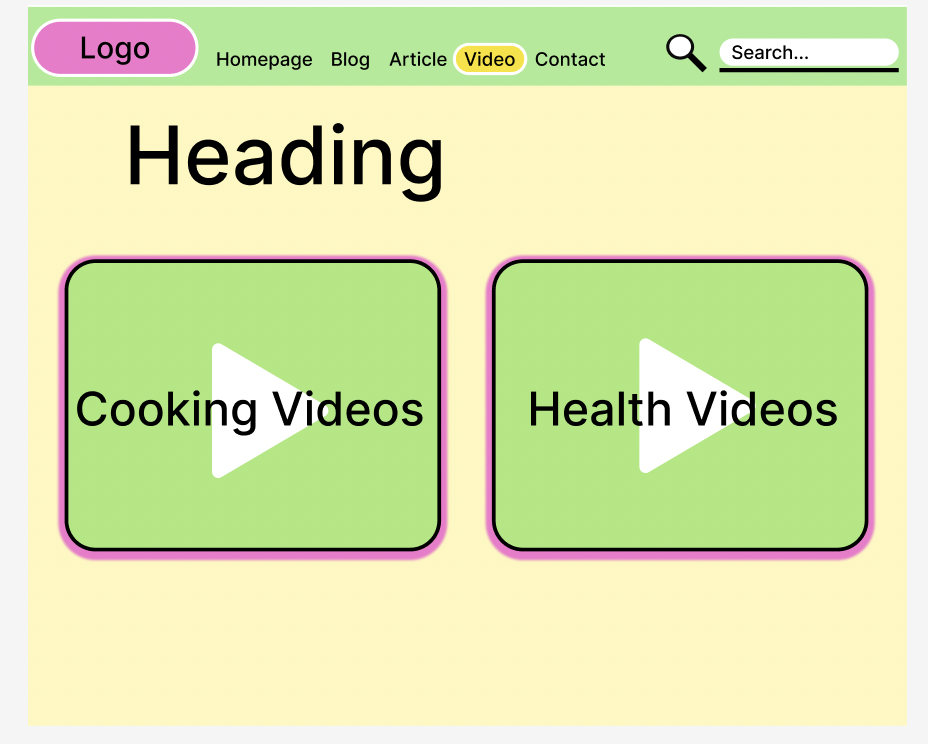
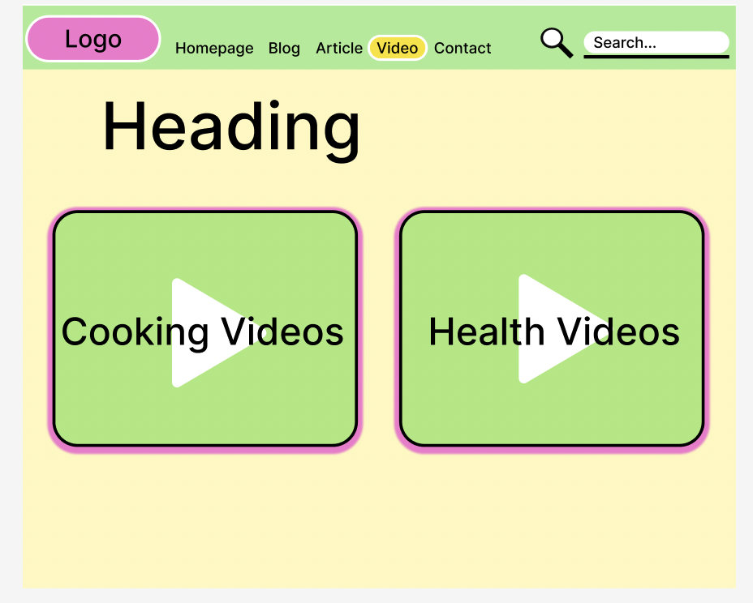

My Wireframe Images
   

Some advantages of sketching a wireframe instead of using software are the freedom to use any materials, such as a pen or pencil, and the ability to work or sketch in any location. Being able to switch between ideas would be easier and more flexible. Another advantage would be not having to prepare any setup in software or having any delays in switching tools while working. However, some disadvantages include a lack of interactivity for sketches cannot link to any screen or provide a example of the behavior. Another issue would be difficulties in sharing or updating the changes with the wireframes, or how sketches can’t be in great detail, like using different colors or fonts.
For my wireframing style, I think what would work best for me would be the low-fidelity digital wireframing style. According to the UXPin’s Guide to Wireframing, a low-fidelity digital wireframe uses simple and basic text and shapes to create the layout and structure of the website’s design. The reason I picked this wireframe style is that I know I will be changing my design in the future. I want to just begin my website and create a simple layout that I can see all the basic elements that I would use in my design. Therefore, this helps me understand what I need to include or change in my design and prevents me from being overwhelmed by the details. By using simple text, shapes, and colors (I know the boxes are usually gray, but I wanted to get an idea of what my potential color palette could be), I can create my wireframe to become more complex later, once I have a vision of the structure I want to obtain for my final project website.
